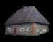
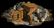
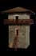
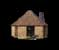
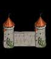
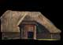

Les parcelles de terrain qui vous appartiennent sont vos biens les plus précieux. C'est à vous de gérer le plus efficacement possible l'expansion et la construction de votre seigneurie. Voici les principaux bâtiments qui peuvent composer vos terres.

Les maisons sont les seules habitations pouvant héberger vos paysans(sauf les murs)
- Une maison héberge 18 paysans. Tous les autres bâtiments à l'exception du château et des murs utilisent 10 paysans
-Un maximum de 60% de vos acres totales est permis en maison.Unique source de nourriture.
- Une ferme produit 40 rations par jour.
C'est à cet endroit que le bois est préparé à des fins de construction.
- Une scierie produit 35 unités de bois par jour.

Les mines sont une excellente source d'or.
- Une mine produit 100 pièces d'or par jour
Lieu où votre mage expérimente de nouveaux sorts
- Ils augmentent les points d'expérience de votre mage. Ils ont 50% de chance de produire 1 point d'expérience par jour(hainyen) par temple
-Ils donnent une chance à chaque jour de recevoir des cadeaux des dieux (or, bois, nourriture,acre).

Tour d'observation, elles sont idéales pour voir ce qui se passe dans vos terres.
-Elles augmentent la probabilité de faire échouer la mission des voleurs ennemis.
- Augmente les probabilités de réussite durant les explorations. Chaque % de tours donne 2% de chance.
- Diminue les frais d'exploration. Chaque % de tours donne 2% de moins de frais.
- Augmente le nombre de voleur perdu par l'ennemi lors des opérations. Chaque % donne 2% de pertes supplémentaires.
- Diminue les dommages fait par les armes de siège. Chaque % donne 4% de réduction de dommage (max 75%).

Lieu où les armes sont fabriquées.
- Réduction des coûts d'entraînement des unités militaires. Chaque % réduit le coût de l'entrainement de 2%
-Réduction des frais militaires, chaque % réduit de 5% les dépenses militaires.
-Limité à 25% de vos acres

Murs entourant vos terres.
-Les fortifications hébergent jusqu'à 5 personnes.
- Ils augmentent la défense de votre seigneurie chaque % donne 1% de protection supplémentaire
Murs entourant vos terres.
- Ils augmentent la défense de votre seigneurie contre la magie. Chaque % donne 1% de protection supplémentaire

Permet l'élevage des chevaux
-Une écurie abrite 75 chevaux
Bâtiment de prestige protégeant à plusieurs niveaux
(1 seul château est permis à tous les 500 acres)- Un château procure + 400 paysans, + 500 points de défense , + 1000 or par jour
- Il donne accès aux armes de siège
Il est à noter que les parcelles de terres inutilisées n'abritent pas de paysans. Tant qu'il n'y aura rien de construit sur ces terres, elles ne produiront rien.